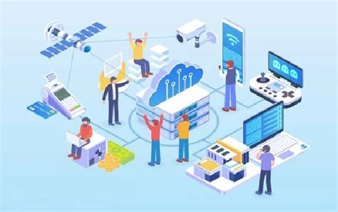
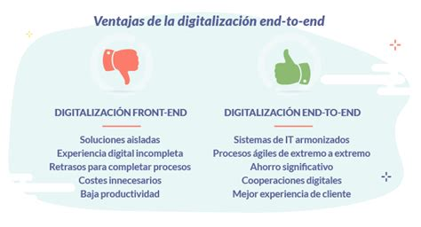
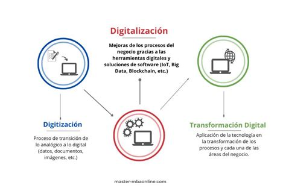

Transformación Digital Industrial
¿Qué es la digitalización?
La digitalización es un proceso que convierte información de formato analógico a digital.

IT vs OT
IT : -Enfocadas en datos, infraestructura de red
y seguridad. -Se ocupan de la nube (cloud) y el intercambio
electrónico de datos.
OT : -Enfocadas en el comportamiento,
dispositivos y producción. -Monitorizan procesos, máquinas y
eventos físicos.

Tecnologías clave
Conectividad y Procesamiento Cloud computing, Blockchain, Sensores, Internet, 5G. Inteligencia y Análisis Inteligencia Artificial (IA), Machine Learning (ML), Análisis Avanzado. Interacción Hombre-Máquina Realidad Aumentada (AR), Robótica, Automatización, Vehículos Autónomos. Ingeniería Avanzada Impresión 3D y 4D, Nanopartículas, Energía Renovable.

Ventajas de la digitalización end-to-end
Cadena de suministro digital con decisiones en tiempo real y mayor colaboración. Aumento de la sostenibilidad (eficiencia energética, menos desperdicios). Mayor flexibilidad laboral (teletrabajo, horario flexible) gracias a la tecnología cloud. Medios más conectados y mayor seguridad en la unión del mundo digital y físico.

Impacto en la organización
Mejorar la Experiencia del Cliente Fidelización y ventaja competitiva a través de un servicio de mayor calidad. Reducir Costes y Aumentar Eficiencia Mejora de procesos y automatización para ofrecer productos a mejor precio. Obtener Ventaja Competitiva Uso de tecnología (ej. Realidad Aumentada) para mantener el liderazgo y la fidelización. Optimizar el Rendimiento del Empleado Liberar a los empleados de tareas repetitivas para que se centren en problemas de mayor valor. Mejorar la Colaboración Uso de herramientas corporativas (ERP, Slack, Teams) para aumentar la productividad interdepartamental.
